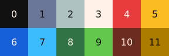

LITECANVAS
Lightweight HTML5 canvas engine suitable for small games and animations for people who enjoy coding: there is no fancy interface, no visual helpers, no gui tools... just coding.
NPM:
npm i @litecanvas/litecanvas
CND:
https://unpkg.com/@litecanvas/litecanvas/dist/dist.js
const settings = {
loop: { init, update, draw }
}
litecanvas(settings)
function init() {
// run once before the game starts
}
function update(dt) {
// called at 60 fps by default
// note: `dt` is a fixed deltatime
}
function draw() {
// use to draw your game graphics
}Default Colors
8-color palette inspired by https://lospec.com/palette-list/sweetie-16
Game Configuration
// Initialize the game
litecanvas(settings = {});
// the game loop callbacks
// if loop = undefined, will use these
// global functions: window.init(), window.update(dt), window.draw()
settings.loop = { init: function, update: function, draw: function}
// make the game screen fill the entire screen
settings.fullscreen = true
// the game screen size
settings.width = settings.height = undefined
// scale the canvas
settings.autoscale = true
// the canvas wrapper
settings.parent = document.body
// target FPS
settings.fps = 60
// the canvas background color
// accept: null or integer (a color from 0 to 7)
settings.background = null
// enable smooth drawing
settings.antialias = true
// disables antialias and force integer scales
settings.pixelart = false
// set to `false` to disable the default tap events (see TAP and TAPPING)
// useful to create your own input handler
settings.tapEvents = true
// amount of time (milliseconds) to pause the tapping detection
settings.tappingInterval = 100;
// export all functions to global context
settings.global = true
Functions for Drawing
/**
* SHAPES DRAWING-RELATED FUNCTIONS
*/
// clear the canvas
// all color argument is a integer (a color from 0 to 7)
clear(color: null|number): void
// draw a color-filled rectangle
rectfill(x, y, w, h, color = 0): void
// draw a outline rectangle
rect(x, y, w, h, color = 0): void
// draw a color-filled circle
circfill(x, y, r, color = 0): void
// draw a outline circle
circ(x, y, r, color = 0): void
// draw a color-filled ellipse
ovalfill(x, y, rx, ry, color = 0): void
// draw a outline ellipse
oval(x, y, rx, ry, color = 0): void
// draw a line
line(x1, y1, x2, y2, color = 0): void
// customize lines and outlines
// see: https://developer.mozilla.org/en-US/docs/Web/API/CanvasRenderingContext2D/lineJoin
// see: https://developer.mozilla.org/en-US/docs/Web/API/CanvasRenderingContext2D/setLineDash
linestyle(width = 1, join = 'miter', dash = null): void
/**
* TEXT DRAWING-RELATED FUNCTIONS
*/
// draw a text
text(x, y, text: string, color = 0, size: number|null, font = 'monospace'): void
// set the text alignment and baseline
// see: https://developer.mozilla.org/en-US/docs/Web/API/CanvasRenderingContext2D/textAlign
// see: https://developer.mozilla.org/en-US/docs/Web/API/CanvasRenderingContext2D/textBaseline
textalign(align = 'start', baseline = 'top'): void
/**
* IMAGE DRAWING-RELATED FUNCTIONS
*/
// draw a image
image(x, y, image: Image|HTMLCanvasElement): void
/**
* IMAGE DRAWING-RELATED FUNCTIONS
*/
// make a image
// see the "Paint" example
paint(width, height, draw: Array|Function): OffscreenCanvas
/**
* ADVANCED DRAWING-RELATED FUNCTIONS
*/
// save the canvas context
push(): void
// restore the canvas context
pop(): void
// update the transformation matrix
// note: angle in radians
transform(translateX, translateY, scale = 1, angle = 0): void
// update the alpha (transparency)
// see: https://developer.mozilla.org/en-US/docs/Web/API/CanvasRenderingContext2D/globalAlpha
alpha(value = 1): void
// update the type of compositing operation
// see: https://developer.mozilla.org/en-US/docs/Web/API/CanvasRenderingContext2D/globalCompositeOperation
blendmode(value = 'source-over'): voidFunctions for Sound
// play a predefined sound
// note: `n` must be a sound index (from 0 to 7)
sfx(n = 0, volume = 1, pitch = 0, randomness = 0): AudioBufferSourceNode
// also, you can play a ZzFX array of params
// see: https://killedbyapixel.github.io/ZzFX/
// example: sfx([2,.05,598,.07,0,.19,0,1.32,9.9,-70,0,0,0,0,0,0,.3,.02,0,.04])
sfx(ZzFXparams: Array, volume = 1, pitch = 0, randomness = 0): AudioBufferSourceNodeFunctions for Math
// check a collision between two rectangles
// all arguments are required and must be numbers
colrect(x1, y1, w1, h1, x2, y2, w2, h2): boolean
// check a collision between two circles
// all arguments are required and must be numbers
colcirc(x1, y1, r1, x2, y2, r2): boolean
// Generates a pseudo-random float between min (inclusive) and max (exclusive)
rand(min = 0, max = 1.0): number;
// Generates a pseudo-random integer between min (inclusive) and max (inclusive)
randi(min = 0, max = 100): number;
// Returns `true` or `false` based on random chance (p)
// example: chance(0.25) ? '25% true' : '75% false'
chance(p = 0.5): boolean
// Choose a random item from a Array
choose(arr: Array): any
// Calculates a linear (interpolation) value over `t`.
// example: lerp(0, 50, 0.5) returns 25
// learn more: https://gamedev.net/tutorials/programming/general-and-gameplay-programming/a-brief-introduction-to-lerp-r4954/
lerp(a: number, b: number, t: number): number
// Convert degrees to radians
deg2rad(n: number): number
// Convert radians to degrees
rad2deg(n: number): number
// Force a value within the boundaries by clamping it to the range min, max.
// example: clamp(50, 0, 100) return 50
// example: clamp(150, 0, 100) return 100
// example: clamp(-10, 0, 100) return 0
clamp(value: number, min: number, max: number): number
// Returns the sine of a number in radians.
sin(n: number): number
// Returns the cosine of a number in radians.
cos(n: number): number
// Returns the angle between the positive x-axis and the origin (0, 0) to the point (x, y)
atan2(x: number, y:number): number
// Returns the square root of the sum of squares of its arguments
hypot(...ns: number): number
// Returns the absolute value of a number.
abs(n: number): number
// Rounds up and returns the smallest integer greater than or equal to a given number
ceil(n: number): number
// Returns the value of a number rounded to the nearest integer.
round(n: number): number
// Rounds down and returns the largest integer less than or equal to a given number
floor(n: number): number
// Returns the smallest of the numbers given as input parameters, or `Infinity` if there are no parameters.
// example: min(-10, 15, -1) returns -10
min(...ns: number): number
// Returns the largest of the numbers given as input parameters, or `-Infinity` if there are no parameters.
// example: max(-10, 15, -1) returns 15
max(...ns: number): number
// Returns the value of a base raised to a power
// example: pow(2, 3) returns 2³ or 8
pow(x: number, y: number): number
// Returns the square root of a number
sqrt(n: number): number
// Returns 1 or -1, indicating the sign of the number passed as argument. If the input is 0, it will returns 0.
sign(n: number): number
Globals Variables
// the game canvas
CANVAS: HTMLCanvasElement
// the game canvas 2d context
// see: https://developer.mozilla.org/en-US/docs/Web/API/CanvasRenderingContext2D
CANVAS.ctx
// the game canvas wrapper
PARENT: HTMLElement
// the game screen width
WIDTH: number
// the game screen height
HEIGHT: number
// the center X of game screen
CENTERX: number
// the center Y of game screen
CENTERY: number
// the FPS meter
FPS: number
// the amount of time since the game started
ELAPSED: number
// `true` when the screen is touched/clicked
TAPPED: boolean
// `true` while the screen is being touched/clicked
TAPPING: boolean
// the tap/click X position
TAPX: number
// the tap/click Y position
TAPY: number
Advanced Features
// the plugin "Asset Loader" is automatically loaded into the playground
// see: https://github.com/litecanvas/plugin-asset-loader
// Asynchronously load an image
loadImage(url: string, callback: function)
// Asynchronously load an external JavaScript file
loadScript(url: string, callback: function)